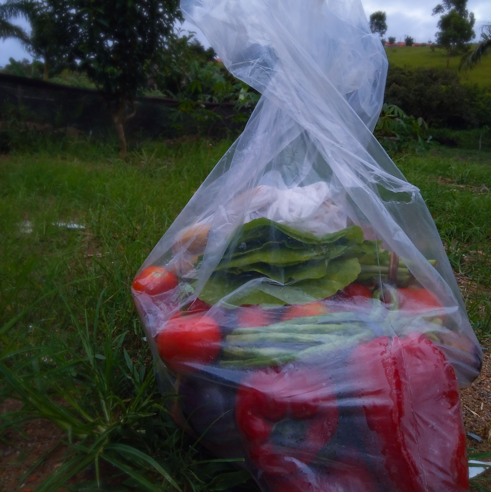

Conheça os projetos e Oficinas que o CJ está envolvido!
O Conselho de Jovens tem envolvimento em
quase todos os projetos e oficinas da
Casa Opoca, todos os dias tem ao menos um
integrante participando de alguma atividade!
Acompanhe todos os projetos da Casa Opoca
clicando no botão abaixo:
Nenhuma e Nenhum a Menos:
Arte, ciência, politíca e comunidade.
O Projeto Nenhuma e Nenhum a Menos objetiva a criação
Arte e Ativismo:
práxis poéticas urbanas
Desenha-se como uma ação para partilhar e criar arte visual comtemporânea na interface politíca com jovens das periferias de São Miguel Arcanjo-SP. A oficina propõe debater tais questões através da criação de um espaço de diálogo que afetive, também, a criação artística em coletivo. Nesse sentido os temas abordados nos encontros da oficina perpassam: arte e ativismos feministas; arte e ativismos racial e étnico; arte e ativismos LGBTQIAP+; além do enfoque crítico nas questões de classe social e masculinidades.
Saiba maisConexão OPOCA
O Projeto Conexão OPOCA tem como objetivo cuidar de
toda tecnologia da Casa Opoca, desde os modos de usar
os equipamentos até realizar manutenções nos mesmos.
O projeto faz parte da criação da Agenda Ideal da Bolsa de
Iniciação Científica, que tem como princípios a autonomia,
a ética e a solidariedade.

O Projeto Emergência: Soberania Alimentar e Nutricional trabalha para a criação de um sistema ético de produção e consumo
agrícolas com sustentabilidade econômica, ecológica, cultural, política e social em São Miguel Arcanjo. Nesse momento a ação
envolve a organização da excedente da média produção agrícola local, a compra da agricultura familiar e a atuação a partir de
nossas comunidades, para a segurança alimentar e nutricional. O Projeto cobre ainda uma série de uniciativas como a criação
de Hortas Populares e o Reflorestamento de áreas degradadas através do plantio de matas e pomares ciliares, a promoção
de canteiros comestíveis caseiros, rendas de apoio, educação ambiental e desenvolvimento da cultura, memória e tradição
caipiras no cuidado da mata e no cultivo de plantas. O objetivo é construir e fortalecer caminhos para a autonomia e para a
segurança alimentar através da produção de uma alimentação saudável, de base orgânica e agroecológica em São Migel Arcanjo.